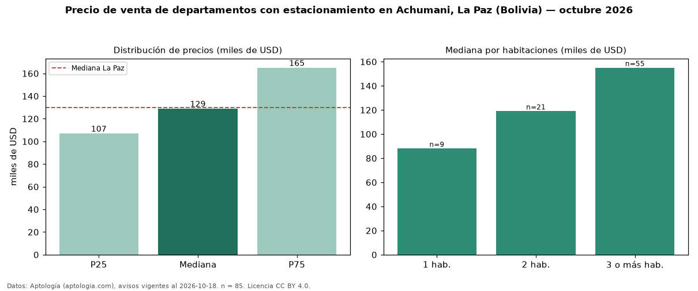

Precio de venta de departamentos con estacionamiento en Achumani, La Paz (Bolivia) — octubre 2026
USD 129.000 es el precio mediano de departamentos con estacionamiento en venta en Achumani, La Paz (Bolivia) (n = 85 avisos). Frente a la mediana de todos los departamentos en venta de Achumani (USD 120.000, n = 123), queda 7 % por encima; este segmento reúne el 69 % de esos avisos. Por metro cuadrado, la mediana es USD 1.015/m² (n = 81), 3 % por debajo del conjunto de referencia (USD 1.046/m²). El área mediana anunciada es 134 m². El segmento con más oferta es el de 3 o más habitaciones (55 avisos, mediana USD 155.000); pasar de 1 habitación a 3 o más habitaciones cambia la mediana +76 %. La cuota de mantenimiento o condominio mediana declarada es USD 50,00 al mes (n = 59). La mediana de todos los departamentos en venta de La Paz es USD 130.000 (−1 % de diferencia). La mitad central de los avisos va de USD 107.000 a USD 165.000 (razón 1,5), una dispersión moderada. Datos: Aptología (aptologia.com), CC BY 4.0 — https://www.aptologia.com/bo/venta/la-paz/achumani. Archivos: PDF, CSV con las cifras y gráfica PNG.

| Avisos únicos | 85 |
|---|---|
| Percentil 25 | COP 107.000 |
| Mediana | COP 129.000 |
| Percentil 75 | COP 165.000 |
| Mediana por m² | COP 1.014 |
Fuente: avisos vigentes de portales inmobiliarios recopilados por Aptología, deduplicados (mínimo 30 avisos únicos por celda). Precios pedidos, no cerrados. Fecha: 2026-10-18.